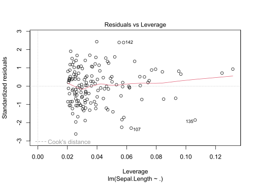
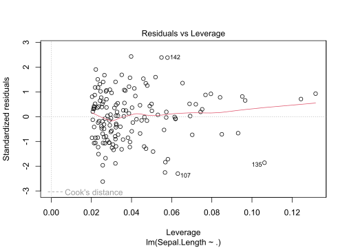

Chapter 3 R programming
In the following, we will consider base R concepts that are important but often overlooked by or unknown to R users. We hope that this chapter will help you to better understand R as a programming language, to avoid common mistakes, and to write more efficient code.
Some of the examples used in this chapter are taken from The R Inferno by Patrick Burns, who described his materials in the following way:
If you are using R and you think you’re in hell, this is a map for you.
3.1 Common mistakes to avoid
In the first part of this chapter, we will look at some common mistakes and how to avoid them.
3.1.1 The floating-point error
In R, a real number is represented as a floating-point number. A floating-point number is a positive or negative whole number scaled by an integer exponent of a fixed base.

It is actually not that complicated. For example, 12.568 is a floating-point number in base ten with five digits of precision:
\[
12.568 = \underbrace{12568}_\text{whole number} \times {\underbrace{10}_\text{base}}^{\overbrace{-3}^\text{integer exponent}}
\]
Base ten is the most convenient base to understand how floating-point numbers are represented. But you can use any base. For example, in base five, 12.568 is represented by
\[
12.568 = \underbrace{22241}_\text{whole number} \times {\underbrace{5}_\text{base}}^{\overbrace{-3}^\text{integer exponent}},
\]
i.e. a floating-point number with five digits of precision. You can validate that this is indeed the right representation
\[
\begin{align*}
22241 \times 5^{-3} &= (2 \times 5^{4} + 2 \times 5^{3} + 2 \times 5^{2} + 4 \times 5^{1} + 1 \times 5^{0}) \times 5^{-3}\\
&= 2 \times 5^{1} + 2 \times 5^{0} + 2 \times 5^{-1} + 4 \times 5^{-2} + 1 \times 5^{-3}\\
&= 10 + 2 + 0,4 + 0,16 + 0.008\\
&= 12.568.
\end{align*}
\]
In base two, the representation is more complex:
\[
12.568 = \underbrace{1100 1001 0001 0110 1000 0111 0010 1011 0000 0010 0000 1100 0100 1001 1011 1010 011}_\text{whole number} \times {\underbrace{2}_\text{base}}^{\overbrace{-60}^\text{integer exponent}},
\]
but it still has the same form; a positive whole number with 64 digits of precision times the base to the power -60.
Not all real numbers can be represented by a floating-point number with a predefined precision. The base and the number of digits regulate how precisely a floating point number can be represented. For example, you cannot represent 12.568 as a floating-point number with four digits of precision in base ten, five or two. The nearest whole number of 12586 with only four digits of precision is 1257. Hence, the closest we can get to 12.568 using only four digits of precision in base ten is 12.57. Not too bad. The nearest whole number of 22241 with only four digits of precision is 2224. Therefore, the closest we can get to 12.568 using only four digits of precision in base five is 12.56. A bit worse than in base ten. However, the nearest whole number of 1100100100010110100001110010101100000010000011000100100110111010011 with only four digits of precision in base 2 is 1100. This means that the closest we can get to 12.568 using only four digits of precision in base five is 12. A difference of 0.568 may not be problematic in some cases, but it can be catastrophic in others.
R uses base 2 with (usually) 53 digits of precision. Hence, all floating-point numbers with more than 53 digits of precision will be represented by the nearest floating-point number with 53 digits of precision.
For example, take the real number 0.3. In base two, 0.3 is represented by 0.0100110011001100110011001100… (a number with infinitely many digits of precision). The nearest floating-point number with only 53 digits of precision is 0.299999999999999988897769753748434595763683319091796875, which is the floating-point number R uses to represent 0.3.
The binary representation is not perfect, but it is the best approximation R has.
When you assign the value 0.3 to an object and print the object to the console afterwards, you will see that R returns 0.3:
So you may think Why did you bother me with all that talk about floating-point numbers? There is clearly no problem here!
However, per default, the function print() only prints 7 significant digits when printing numeric values.
If you increase that number to 22, you can see that 0.3 is actually represented by 0.2999999999999999888978
This inaccuracy is known as the floating-point error, and it is the reason why simple comparisons like the following can fail:
Instead of using == to compare two objects, use the base R function all.equal() to test if two objects are equal up to some tolerance (\(1.5\times 10^{-8}\) per default).
all.equal(0.1 + 0.2, 0.3)
#> [1] TRUE
all.equal(0.1 + 0.2, 0.3, tolerance = 0)
#> [1] "Mean relative difference: 1.850372e-16"
all.equal(0.1 + 0.2, 0.3, tolerance = 1e-16)
#> [1] "Mean relative difference: 1.850372e-16"
all.equal(0.1 + 0.2, 0.3, tolerance = 1e-15)
#> [1] TRUEAs all.equal() returns either TRUE or a string with the mean relative difference, you cannot use it directly in if expressions. Use isTRUE(all.equal()) instead:
Alternatively, you can use the dplyr function near()
3.1.2 The ... argument
Another source of mistakes often occur in connection to arguments. To illustrate the problem, let us consider a simple example. Assume we have three observations \(-1, 5 \text{ and }118\), and we want to find the minimum, maximum, mean, and median in R. We know that we can use the functions min(), max(), mean(), and median() to obtain the desired numbers, so we run the following code:
min(-1, 5, 118)
#> [1] -1
max(-1, 5, 118)
#> [1] 118
mean(-1, 5, 118)
#> [1] -1
median(-1, 5, 118)
#> [1] -1The first two numbers are correct, but what is happening with the last two function calls?
The problem is that the four functions take different arguments. Let us take a look at the arguments for max() first:
The first argument is ... (dot dot dot). The three dots represent a special argument that allows functions to take any number of arguments - besides all other specified arguments. This means ... will take all unnamed arguments passed to the function. In the example above, none of the parameters are specified by name, and max() will use \(-1, 5 \text{ and }118\) to compute the maximum value.
This is different in connection to the function mean():
The first argument is x, which is followed by .... As all parameters are unnamed in the function call mean(-1, 5, 118), mean() takes the first value \(-1\) to compute the mean, and passes all other arguments to another function. Therefore, mean(-1, 5, 118) returns \(-1\).
In this simple example, one solution is to store all observations in a vector and pass the vector to the functions:
min(c(-1, 5, 118))
#> [1] -1
max(c(-1, 5, 118))
#> [1] 118
mean(c(-1, 5, 118))
#> [1] 40.66667
median(c(-1, 5, 118))
#> [1] 5In more complex cases, you have to be more cautious. When a function has ... as one of its arguments, misspelled or non-existing arguments will simple be passed on and not raise an error. This increases the change of typos or wrong computations to go unnoticed. Furthermore, the argument ... is greedy, which is why you often have to name all arguments that you want to pass to the function.
max(c(-1, 5, 118, NA))
#> [1] NA
max(c(-1, 5, 118, NA), TRUE)
#> [1] NA
max(c(-1, 5, 118, NA), na.rm = TRUE)
#> [1] 118If you want to know what other arguments ... represents, you can look in the function documentation. The function plot(), for example, takes the arguments .... When you read the function documentation (by running ?plot), you can see that ... represents other graphical parameters, and the documentation refers to the documentation for graphical parameters for details.
3.1.3 Others
R has many base functions that behave differently than you may expect. One of them is sample(). sample() creates a sample of a specified size from the elements of the first argument x with or without replacement. The most common use of sample() is probably to let x be a vector:
But have you ever tried to pass a single number? Or even a real number?
What do you thinkR returns?
Show me!
Did you expect this outcome? In case you are confused, here is the reason why:.
The first argument of sample() is x. x can either be a vector of one or more elements from which to choose, or a positive integer. If x has length one, is numeric and larger than 1, the sampling will take place from the sequence 1:x. On the other hand, 1:x generates a vector of real numbers; starting with 1 and increasing with 1 until the upper limit x is reached. Hence, when x = 10.1, 1:x is equal to the sequence 1,2,...,10, and sample(x) is equivalent to sample(1:10).
This leads us to the next base R function with an unexpected behavior; the colon operator :. It can be used to generate regular sequences and is equivalent to seq() (if from and to are not factors). Do you know what the output of the following code will be?
Show me!
The result is the sequence from 0 to 9; not 1 to 9. To understand why 1:n-1 returns 0,1,...,9, we take a look at the syntax documentation (?Syntax):

The documentation shows that the colon operator : has a higher precedence than the operator -. Hence, 1:n is evaluated first, and - is evaluated afterwards (1:n-1 is equivalent to (1:n)-1). To obtain a sequence from 1 to 9, we can change the order of evaluation by using parentheses:
Alternatively, we could use the function seq_len() to create a sequence that starts at 1 and with steps of 1 finishes at the number passed to the function.
1:n and seq_len(n), which we will look at in the final example!
What does the colon operator return when n is equal to 0?
Show me!
Did you expect the output to be 1, 0? The colon operator can also generate a sequence from from to to in steps of -1 (when to < from). This behavior can be useful in general, but when : is used in a for loop it is often undesired. In situations like that, use the function seq_len() instead. When zero is passed as an argument, seq_len returns a empty integer vector (integer(0)):
seq_len() also has a sibling, seq_along(), that can be used generate a sequence that is as long as another vector. More precisely, if x is a vector of length \(\geq\) 1, seq_along(x) is a shortcut for seq_len(length(x)):
3.2 Data structures in R
R provides a number of data structures, i.e. particular ways of organizing data to make their use more effective. These data structures are referred to as objects. In this chapter, we will take a look at the most frequently used objects in R.
3.2.1 Types
All R objects have a type. R supports more than 20 different types (see all of them here), but we will only focus on four of six basic (atomic) vector types in this section, namely logical, integer, double (often called numeric), and character.
Atomic vectors represent the most simple data structure in R. They are one dimensional and homogeneous, which means that all contents must be of the same type. Single numbers, such as 12.568, and strings, such as Hello world, are vectors; just of length 1.
The fact that all components of an atomic vectors must be of the same type means that they are often coerced to different types during operations. R objects are coerced according to the following precedence:
logical: Logical vectors have the lowest precedence. Whenever a logical vector is combined with a vector of another type, the logical vector will be turned into the other type.integer: Integer vectors have the second lowest precedence. Combining an integer vector with a vector of typedoubleorcharacter, will result in a vector of typedoubleorcharacter, respectively.double: Vectors of typedoublehave the second highest precedence. They will only change type when they are combined with a vector of typecharacter.character: Character vectors are never coerced. When you combine two or more vectors, one of them being of typecharacter, the resulting vector will be of typecharacteras well.
In most situations, you do not have to worry about coercion, as R usually coerces the relevant objects automatically. However, some functions may not be able to coerce objects (due to the precedence). In those cases, R returns an error. Let us consider some examples. We define four vectors, one of each type:
(logi_vec <- FALSE)
#> [1] FALSE
typeof(logi_vec)
#> [1] "logical"
(int_vec <- 1:10)
#> [1] 1 2 3 4 5 6 7 8 9 10
typeof(int_vec)
#> [1] "integer"
(dbl_vec <- c(2.5, 12.568))
#> [1] 2.500 12.568
typeof(dbl_vec)
#> [1] "double"
(char_vec <- c("abc"))
#> [1] "abc"
typeof(char_vec)
#> [1] "character"What is the type of each of the resulting vectors below?
Show me!
typeof(c(logi_vec, int_vec))
#> [1] "integer"
typeof(c(int_vec, dbl_vec))
#> [1] "double"
typeof(c(logi_vec, char_vec))
#> [1] "character"logi_vec is coerced to an integer vector (FALSE is coerced to 0), and the resulting vector is of type integer.
Line 3: The integer vector int_vec is coerced to a double vector, which is why c(int_vec, dbl_vec) is of type double.
Line 5: The logical vector logi_vec is coerced to a character vector, and the result is a vector of type character.
What is the result of the following operations? Is R able to coerce the objects into the required type, or will it return an error?
Show me!
logi_vec < char_vec
#> [1] FALSE
min(int_vec, dbl_vec)
#> [1] 1
logi_vec + char_vec
#> Error in logi_vec + char_vec: non-numeric argument to binary operatorlogi_vec is coerced to a character vector. The operator < is able to compare strings (using lexicographic orders), and as F comes after a in the alphabet, the comparison returns FALSE.
Line 3: The integer vector int_vec is coerced to a double vector, and min(int_vec, dbl_vec) returns 1.
Line 5: The logical vector logi_vec can be coerced to a character vector, but char_vec cannot be coreced to a integer or double vector. As + is only implemented for numeric or complex vectors, R returns an error.
Exercises
- Why is the default missing value, NA, a logical vector?
- How can you use the automatic type coercion to convert this boolean matrix to a numeric one (with 0s and 1s)?
(mat <- matrix(sample(c(TRUE, FALSE), 12, replace = TRUE), nrow = 3))
#> [,1] [,2] [,3] [,4]
#> [1,] TRUE TRUE TRUE FALSE
#> [2,] TRUE TRUE FALSE TRUE
#> [3,] FALSE FALSE TRUE TRUE- What do you need to change in the code above to obtain an integer matrix immediately?
3.2.2 Objects and attributes
In the previous section, we have introduced the most simple data structure in R: atomic vectors. Recall that atomic vectors are one dimensional and homogeneous, which means that all components must be of the same base type (logical, integer, double, or character). R provides another one-dimensional data structure; generic vectors, better known as lists. The important difference between atomic vectors and generic vectors/lists is that lists can contain different types, i.e. lists are heterogeneous.
All vectors (i.e. atomic and generic) can have one or more attributes. Attributes are name-value pairs that attach metadata to an object. They can be accessed and modified with attributes() (to get a list of all attributes) and attr() (to access individual components). By adding specific attributes to vectors, we obtain other important data structures like matrices, arrays, and data frames.
Two-dimensional matrices and multi-dimensional arrays are obtained from atomic vectors by adding the dimensions attribute dim:
# Defining an atomic vector
(vec <- 1:12)
#> [1] 1 2 3 4 5 6 7 8 9 10 11 12
attributes(vec)
#> NULL
# Modifying the attribute 'dim'
dim(vec) <- c(3, 4)
vec
#> [,1] [,2] [,3] [,4]
#> [1,] 1 4 7 10
#> [2,] 2 5 8 11
#> [3,] 3 6 9 12
attributes(vec)
#> $dim
#> [1] 3 4
class(vec)
#> [1] "matrix" "array"
# Modifying the attribute 'dim' once more
dim(vec) <- c(3, 2, 2)
vec
#> , , 1
#>
#> [,1] [,2]
#> [1,] 1 4
#> [2,] 2 5
#> [3,] 3 6
#>
#> , , 2
#>
#> [,1] [,2]
#> [1,] 7 10
#> [2,] 8 11
#> [3,] 9 12
attributes(vec)
#> $dim
#> [1] 3 2 2
class(vec)
#> [1] "array"Instead of modifying the attribute using the function dim(), you can simple use the functions matrix() or array():
# Defining a matrix
(mat <- matrix(1:12, ncol = 4, nrow = 3))
#> [,1] [,2] [,3] [,4]
#> [1,] 1 4 7 10
#> [2,] 2 5 8 11
#> [3,] 3 6 9 12
attributes(mat)
#> $dim
#> [1] 3 4
dim(mat)
#> [1] 3 4
# Defining a 3-dimensional array
(arry <- array(1:12, c(3, 2, 2)))
#> , , 1
#>
#> [,1] [,2]
#> [1,] 1 4
#> [2,] 2 5
#> [3,] 3 6
#>
#> , , 2
#>
#> [,1] [,2]
#> [1,] 7 10
#> [2,] 8 11
#> [3,] 9 12
attributes(arry)
#> $dim
#> [1] 3 2 2
dim(arry)
#> [1] 3 2 2Data frames are similar to matrices in that they are two-dimensional structures. However, data frames are based on generic vectors, i.e. a data frame is a list of equal-length vectors.
a <- c(1, 2, 3)
b <- c(12.568, 12.569, 12.57)
y <- c(TRUE, FALSE, TRUE)
z <- c("a", "b", "c")
(df <- data.frame(a, b, y, z))
#> a b y z
#> 1 1 12.568 TRUE a
#> 2 2 12.569 FALSE b
#> 3 3 12.570 TRUE cBecause of their definition, data frames share properties of both the matrix and the list. For instance, the dimension of a data frame correspond to the dimension of a matrix (number of observations, i.e. the length of the atomic vectors, times the number of variables, i.e. the length of the list). But the length of a data frame is equal to the length of the list; not the total number of observations as for matrices:
Another important difference between matrices and data frames is that, per default, data frames have three attributes, whereas matrices only have one:
attributes(df)
#> $names
#> [1] "a" "b" "y" "z"
#>
#> $class
#> [1] "data.frame"
#>
#> $row.names
#> [1] 1 2 3These attributes are
names, labelling the variablesclass, a vector of character strings giving the names of the classes which the object inherits fromrow.names, labelling the cases
The names attribute labels the individual elements of a vector or list. You can name a vector in three ways:
- when creating it
- by modifying an existing vector’s
namesattribute usingnames<-
- or by creating a modified copy of a vector using
setNames
The class attribute helps R to apply the correct function to an object. When a generic function (such as summary()) is applied to an object with a class attribute (for example data.frame) R tries to find the class-specific function (e.g. summary.data.frame()). If the class-specific function is available, it is applied to the object. If the class name does not produce a suitable function, the default function (e.g. summary.default()) is used.
The row.names attribute is similar to the names attribute, but instead of labelling the variables it labels the observations/cases/rows.
Besides dim, names, class, and row.names, R also provides some other attributes that we will not discuss here.
We want to note, however, that you can define your own attributes using the function structure:
x <- structure(1:10, my_own_attr = "Hello world!")
attributes(x)
#> $my_own_attr
#> [1] "Hello world!"In most cases, you should not simply remove an attribute from an object, unless you know what you are doing. Otherwise you may end up with very strange results. For example, if you remove the attribute levels from a factor, R will no longer be able to perform simple operations on that factor:
(x <- sample(c("a", "b", "c"), 12, replace = TRUE))
#> [1] "a" "c" "b" "b" "b" "a" "a" "a" "a" "a" "b" "a"
y <- factor(x)
attributes(y)
#> $levels
#> [1] "a" "b" "c"
#>
#> $class
#> [1] "factor"
attr(y, "levels") <- NULL
y
#> Error in as.character.factor(x): malformed factorAnd if you remove the attribute class, the factor is turned into an atomic vector
y <- factor(x)
attributes(y)
#> $levels
#> [1] "a" "b" "c"
#>
#> $class
#> [1] "factor"
unclass(y)
#> [1] 1 3 2 2 2 1 1 1 1 1 2 1
#> attr(,"levels")
#> [1] "a" "b" "c"If you remove the only attribute (class) from a date vector, the result is a numeric vector representing the number of days since 1970-01-01
3.2.3 Accessors
In the previous section, we have seen how we can adding attributes to vectors in order to obtain other important data structures like matrices, arrays, and data frames. Furthermore, we mentioned that two-dimensional matrices and multi-dimensional arrays are based on atomic vectors, while data frames are obtained from generic vectors/lists. We will now see that the choice of vector type (atomic vs. generic) has an effect on the accessibility of elements.
For two-dimensional matrices, multi-dimensional arrays and data frames, elements can be accessed in different ways.
Data frames can be subsetted like a one-dimensional structure (where it behaves like a list), or a two-dimensional structure (where it behaves like a matrix).
The
[accessor can be used on vectors, matrices, arrays, lists and data frames to extract or replace subsets of the data with the same class.(x <- 1:5) #> [1] 1 2 3 4 5 x[2:3] #> [1] 2 3 x[2:8] #> [1] 2 3 4 5 NA NA NA (y <- matrix(1:12, nrow = 3)) #> [,1] [,2] [,3] [,4] #> [1,] 1 4 7 10 #> [2,] 2 5 8 11 #> [3,] 3 6 9 12 y[4:9] #> [1] 4 5 6 7 8 9 (l <- list(a = 2:3, b = "toto", c = runif(10))) #> $a #> [1] 2 3 #> #> $b #> [1] "toto" #> #> $c #> [1] 0.4320790 0.1314371 0.8055158 0.0681059 0.2925918 0.4989200 0.4043062 0.4221439 #> [9] 0.5620958 0.7342673 l[2:3] #> $b #> [1] "toto" #> #> $c #> [1] 0.4320790 0.1314371 0.8055158 0.0681059 0.2925918 0.4989200 0.4043062 0.4221439 #> [9] 0.5620958 0.7342673What does with the same class mean? It means that the class of the resulting subset is the same as the object that was subsetted with
[. That means, when you subset a vector with the[accessor, the subset is a vector as well. When you subset a list with the[accessor, the result is a list: Even if you only select a single entry of the list.The index object can be numeric, logical, character, or empty:
x[c(FALSE, TRUE, FALSE, TRUE, FALSE)] #> [1] 2 4 x[c(FALSE, TRUE)] #> [1] 2 4 y[] #> [,1] [,2] [,3] [,4] #> [1,] 1 4 7 10 #> [2,] 2 5 8 11 #> [3,] 3 6 9 12 l[c("a", "c")] #> $a #> [1] 2 3 #> #> $c #> [1] 0.4320790 0.1314371 0.8055158 0.0681059 0.2925918 0.4989200 0.4043062 0.4221439 #> [9] 0.5620958 0.7342673 l[c(FALSE, TRUE)] #> $b #> [1] "toto"Besides using a single vector to subset matrices, arrays and data frames, you can also specify several indices to
[to obtain two-dimensional subsets. An empty index indicates that all entries in that dimension are selected:y[2:3] #> [1] 2 3 y[2:3, ] #> [,1] [,2] [,3] [,4] #> [1,] 2 5 8 11 #> [2,] 3 6 9 12 y[, 2:3] #> [,1] [,2] #> [1,] 4 7 #> [2,] 5 8 #> [3,] 6 9 y[2, 3] #> [1] 8Matrices and arrays can also be indexed via a numeric matrix with one column for each dimension. Each row of the index matrix then selects a single element of the array:
The
[[and the$accessor are both operators to access or replace a single element. However, while[[can be used on vectors, matrices, arrays, lists and data frames, the$accessor does only work on lists and data frames.x[[3]] #> [1] 3 l[[2]] #> [1] "toto" l[["c"]] #> [1] 0.4320790 0.1314371 0.8055158 0.0681059 0.2925918 0.4989200 0.4043062 0.4221439 #> [9] 0.5620958 0.7342673 l$c #> [1] 0.4320790 0.1314371 0.8055158 0.0681059 0.2925918 0.4989200 0.4043062 0.4221439 #> [9] 0.5620958 0.7342673 names(x) <- letters[1:5] x #> a b c d e #> 1 2 3 4 5 x$e #> Error in x$e: $ operator is invalid for atomic vectorsYou can see that for the atomic vector
x,x[3]andx[[3]]result in the same output; a vector of length one. But for the listl, the[accessor returns a list with one entry, while[[returns a matrix. You can think of a list as a pepper pot, each entry of the list being a sachet of pepper. The[accessor extracts the desired sachets, but they are still contained within the pot. The[[accessor takes the desired sachets out of the pot.![Indexing lists in R. [Source: https://goo.gl/8UkcHq]](https://pbs.twimg.com/media/DQ5en8XWAAICIaJ.jpg)
Figure 3.1: Indexing lists in R. [Source: https://goo.gl/8UkcHq]
Besides the fact that the
$accessor cannot be used on atomic vectors, matrices or arrays, the main difference between[[and$is that$does not allow computed indices:
Before we move on to some exercises, we have two more comments.
Per default, the
[[accessor only extracts columns if their column names match one of the strings provided in a character vector exactly. That means, if you want to extract a list entry namedaaakvusing[[a]], the result will beNULL:names(l) <- c("aaakv", "b", "c") l #> $aaakv #> [1] 2 3 #> #> $b #> [1] "toto" #> #> $c #> [1] 0.4320790 0.1314371 0.8055158 0.0681059 0.2925918 0.4989200 0.4043062 0.4221439 #> [9] 0.5620958 0.7342673 l$a #> [1] 2 3 l[["a"]] #> NULLTo allow for partial matching, use
exact = FALSE:Per default, the
[accessor coerces the result to the lowest possible dimension. For example, if you extract a single row from a matrix using[, the result will be a vector:To change this behavior, set
drop = FALSE
Exercises
In which order are matrix elements stored?
Use the dimension attribute to make a function that computes the sum of every n successive elements of a vector.
Ex: 1 2 3 4 5 6 7 8 9 10 -> expected outcome: 3 7 11 15 19
[Which are the special cases that you should consider?]Convert the following matrix to a vector by using this replacement rule for rows:
(0, 0) -> 0
(0, 1) -> 1
(1, 1) -> 2
(1, 0) -> NAmat <- matrix(0, 10, 2) mat[c(5, 8, 9, 12, 15, 16, 17, 19)] <- 1 mat #> [,1] [,2] #> [1,] 0 0 #> [2,] 0 1 #> [3,] 0 0 #> [4,] 0 0 #> [5,] 1 1 #> [6,] 0 1 #> [7,] 0 1 #> [8,] 1 0 #> [9,] 1 1 #> [10,] 0 0You have to use the following matrix to do so:
Start by doing it for one row, then by using
apply(). Finally, replace it by a special accessor. Expected result:#> [1] 0 1 0 0 2 1 1 NA 2 0
3.3 Useful R base functions
In this section, I present some useful R base functions (also see this comprehensive list in French and this one in English):
3.3.1 General
#> 'data.frame': 150 obs. of 5 variables:
#> $ Sepal.Length: num 5.1 4.9 4.7 4.6 5 5.4 4.6 5 4.4 4.9 ...
#> $ Sepal.Width : num 3.5 3 3.2 3.1 3.6 3.9 3.4 3.4 2.9 3.1 ...
#> $ Petal.Length: num 1.4 1.4 1.3 1.5 1.4 1.7 1.4 1.5 1.4 1.5 ...
#> $ Petal.Width : num 0.2 0.2 0.2 0.2 0.2 0.4 0.3 0.2 0.2 0.1 ...
#> $ Species : Factor w/ 3 levels "setosa","versicolor",..: 1 1 1 1 1 1 1 1 1 1 ...#> [1] "a" "arry" "b" "char_vec" "dbl_vec" "decode"
#> [7] "df" "int_vec" "l" "logi_vec" "mat" "n"
#> [13] "today" "two_col_ind" "vec" "x" "y" "z"# Remove objects from the environment
rm(list = ls()) ## remove all objects in the global environment#> [1] summary.aov summary.aovlist*
#> [3] summary.aspell* summary.check_packages_in_dir*
#> [5] summary.connection summary.data.frame
#> [7] summary.Date summary.default
#> [9] summary.ecdf* summary.factor
#> [11] summary.glm summary.infl*
#> [13] summary.lm summary.loess*
#> [15] summary.manova summary.matrix
#> [17] summary.mlm* summary.nls*
#> [19] summary.NullVerbose* summary.packageStatus*
#> [21] summary.POSIXct summary.POSIXlt
#> [23] summary.ppr* summary.prcomp*
#> [25] summary.princomp* summary.proc_time
#> [27] summary.rlang:::list_of_conditions* summary.rlang_error*
#> [29] summary.rlang_message* summary.rlang_trace*
#> [31] summary.rlang_warning* summary.srcfile
#> [33] summary.srcref summary.stepfun
#> [35] summary.stl* summary.table
#> [37] summary.tukeysmooth* summary.vctrs_sclr*
#> [39] summary.vctrs_vctr* summary.Verbose*
#> [41] summary.warnings
#> see '?methods' for accessing help and source code#> [1] add1 alias anova case.names coerce
#> [6] confint cooks.distance deviance dfbeta dfbetas
#> [11] drop1 dummy.coef effects extractAIC family
#> [16] formula hatvalues influence initialize kappa
#> [21] labels logLik model.frame model.matrix nobs
#> [26] plot predict print proj qr
#> [31] residuals rstandard rstudent show simulate
#> [36] slotsFromS3 summary variable.names vcov
#> see '?methods' for accessing help and source code#> [[1]]
#> [1] 1
#>
#> [[2]]
#> [1] 2
#>
#> [[3]]
#> [1] 3
#>
#> [[4]]
#> [1] 4
#>
#> [[5]]
#> [1] 5#> [1] 1 2 3 4 53.3.2 Sequence and vector operations
#> [1] 1 2 3 4 5 6 7 8 9 10#> [1] 1 3 5 7 9#> [1] 1 12 23 34 45 56 67 78 89 100#> [1] 1 2 3 4 5#> [1] 1 2 3 4#> [1] 1 2 3 4 1 2 3 4#> [1] 1 1 2 2 3 3 4 4#> [1] 1 1 1 1 2 2 2 3 3 4#> [1] 1 2 3 1 2 3 1 2#> [,1] [,2] [,3] [,4] [,5]
#> [1,] 1.52744810 2.3706771 1.58965967 -0.05969183 2.2099953
#> [2,] -0.09207069 1.5217757 0.14990349 -1.24499660 0.5254641
#> [3,] -0.19372693 0.2190908 1.05530180 -0.80961855 0.3505699
#> [4,] 0.04874046 0.6821643 -1.81601368 0.26260075 -0.2869370
#> [5,] -1.14248085 0.1162177 -0.09045514 -0.51326041 0.8092920
#> [6,] 0.56772000 0.0755938 2.22696416 1.18793515 0.6883024
#> [7,] 0.19922316 1.1245051 -1.88406957 0.49339292 -1.2739199
#> [8,] 0.90378110 0.2248844 -1.34545383 0.58909700 0.5493525
#> [9,] 0.01244049 -0.8097732 0.12023807 1.05595573 0.8683576
#> [10,] -0.05877290 0.5513384 0.38853416 1.33722572 1.5950205#> [1] 1 2 2 6 8#> [1] 1 5 4 2 3#> [1] 1.0 4.0 5.0 2.5 2.5#> [1] 1 4 5 2 3#> [1] "a1" "a10" "a2"#> [1] "a1" "a2" "a10"#> [1] 4#> [1] 6#> [1] 1 NA 2 3#>
#> 1 2 3 4
#> 4 3 2 1#> B
#> A 1 2
#> 1 2 1
#> 2 1 1#> [1] 3 9 4 8 5 2 6 1 10 7#> [1] 6 5 4 7 3#> [1] 4 6 9 7 10 10 5 9 4 8 7 5 3 10 4 7 9 9 10 7 8 6 8 10 6 7 8 4
#> [29] 4 4 6 7 5 10 10 9 6 5 6 10 4 6 10 10 3 8 10 8 7 5#> [1] 76 35 56 55 60 26 45 86 60 85#> [1] 76.28 35.14 56.18 55.50 59.60 26.04 45.05 85.71 60.47 85.01#> [1] 80 40 60 60 60 30 50 90 60 90#> [1] 1 2 2 1#> [1] 4 3 3 4#> [,1] [,2] [,3]
#> [1,] 2 3 4
#> [2,] 3 4 5
#> [3,] 4 5 6
#> [4,] 5 6 7#> param1 param2
#> 1 5 1
#> 2 50 1
#> 3 5 3
#> 4 50 3
#> 5 5 10
#> 6 50 10Also see this nice Q/A on grouping functions and the *apply family and this book chapter about looping.
3.3.3 Character operations
#> [1] "I am me"#> [1] "test0"#> [1] "PC1" "PC2" "PC3" "PC4" "PC5" "PC6" "PC7" "PC8" "PC9" "PC10"#> I am Florian#> [1] "./good-practices.Rmd" "./index.Rmd"
#> [3] "./intro.Rmd" "./packages.Rmd"
#> [5] "./performance.Rmd" "./presentation_project.Rmd"
#> [7] "./r-markdown.Rmd" "./r-programming.Rmd"
#> [9] "./shiny.Rmd" "./tidyverse.Rmd"#> [1] "./good-practices.pdf" "./index.pdf"
#> [3] "./intro.pdf" "./packages.pdf"
#> [5] "./performance.pdf" "./presentation_project.pdf"
#> [7] "./r-markdown.pdf" "./r-programming.pdf"
#> [9] "./shiny.pdf" "./tidyverse.pdf"#> [1] "a" "c" "c" "a" "b" "b" "d" "a" "b" "b"#> [1] 1 3 3 1 2 2 4 1 2 2#> [1] TRUE FALSE FALSE TRUE TRUE TRUE FALSE TRUE TRUE TRUE#> $a
#> [1] 1 4 7 10
#>
#> $b
#> [1] 2 5 8 11
#>
#> $c
#> [1] 3 6 9 12#> [1] "c" "d"#> [1] "a" "b" "c" "d" "e"#> [1] "a" "b"3.3.4 Logical operators
#> Error in eval(expr, envir, enclos): will go there#> [1] TRUE#> [1] FALSE FALSE TRUE FALSE#> Error in c(TRUE, FALSE, TRUE, TRUE) && c(FALSE, TRUE, TRUE, FALSE): 'length = 4' in coercion to 'logical(1)'#> [1] 0.98134782 -0.92585168 -0.03342174 0.19328473 -1.69985454 1.36961746 0.22476524
#> [8] 0.43326716 -0.34022319 -0.60017289#> [1] 0.98134782 0.92585168 0.03342174 0.19328473 1.69985454 1.36961746 0.22476524
#> [8] 0.43326716 0.34022319 0.60017289Beware with ifelse() (learn more there), for example
#> [1] 1#> [1] 1 2 3 4 5#> [1] 1 2 3 4 53.3.5 Exercises
Use
sample(),rep_len()andsplit()to make a function that randomly splits some indices in a list ofKgroups of indices (like for cross-validation). [Which are the special cases that you should consider?]#> $`1` #> [1] 3 6 10 11 14 15 16 19 22 26 32 35 38 39 #> #> $`2` #> [1] 1 12 17 18 21 24 25 27 31 34 36 37 40 #> #> $`3` #> [1] 2 4 5 7 8 9 13 20 23 28 29 30 33Use
replicate()andsample()to get a 95% confidence interval (using bootstrapping) for the mean of the following vector:#> [1] -0.6264538 0.1836433 -0.8356286 1.5952808 0.3295078 -0.8204684 0.4874291 #> [8] 0.7383247 0.5757814 -0.3053884#> [1] 0.1322028Expected output (approximately):
#> 2.5% 97.5% #> -0.3145143 0.5998608Use
match()and some special accessor to add a column “my_val” to this datamy_mtcarsby putting the corresponding value of the column specified in “my_col”. [Can your solution be used for any number of column names?]my_mtcars <- mtcars[c("mpg", "hp")] my_mtcars$my_col <- sample(c("mpg", "hp"), size = nrow(my_mtcars), replace = TRUE) head(my_mtcars)#> mpg hp my_col #> Mazda RX4 21.0 110 mpg #> Mazda RX4 Wag 21.0 110 mpg #> Datsun 710 22.8 93 hp #> Hornet 4 Drive 21.4 110 hp #> Hornet Sportabout 18.7 175 mpg #> Valiant 18.1 105 hpExpected result (head):
#> mpg hp my_col my_val #> Mazda RX4 21.0 110 mpg 21.0 #> Mazda RX4 Wag 21.0 110 mpg 21.0 #> Datsun 710 22.8 93 hp 93 #> Hornet 4 Drive 21.4 110 hp 110 #> Hornet Sportabout 18.7 175 mpg 18.7 #> Valiant 18.1 105 hp 105In the following data frame (recall that a data frame is also a list), for the first 3 columns, replace letters by corresponding numbers based on the
code:df <- data.frame( id1 = c("a", "f", "a"), id2 = c("b", "e", "e"), id3 = c("c", "d", "f"), inter = c(7.343, 2.454, 3.234), stringsAsFactors = FALSE ) df#> id1 id2 id3 inter #> 1 a b c 7.343 #> 2 f e d 2.454 #> 3 a e f 3.234#> a b c d e f #> 1 2 3 4 5 6Expected result:
#> id1 id2 id3 inter #> 1 1 2 3 7.343 #> 2 6 5 4 2.454 #> 3 1 5 6 3.234
3.4 Environments and scoping
Lexical scoping determines where to look for values, not when to look for them. R looks for values when the function is run, not when it’s created. This means that the output of a function can be different depending on objects outside its environment:
#> [1] 11Variable x is not defined inside f so R will look at the environment of f (where f was defined) and then at the parent environment, and so on. Here, the first x that is found has value 10.
Be aware that for functions, packages environments are checked last so that you can redefine functions without noticing.
#> [1] "123"#> [1] 1 2 3#> [1] 1 2 3You can use the <<- operator to change the value of an object in an upper environment:
count1 <- 0
count2 <- 0
f <- function(i) {
count1 <- count1 + 1 ## will assign a new (temporary) count1 each time
count2 <<- count2 + 1 ## will increment count2 on top
i + 1
}
sapply(1:10, f)#> [1] 2 3 4 5 6 7 8 9 10 11#> [1] 0 10Finally, how does ... work? Basically, you copy and paste what is put in ...:
#> $a
#> [1] 2
#>
#> $b
#> [1] 3#> $a
#> [1] 2
#>
#> $b
#> [1] 3Learn more about functions and scoping rules of R with the R Programming for Data Science book.
3.5 Attributes and classes
Attributes are metadata associated with an object. You can get/set the list of attributes with attributes() or one particular attribute with attr().
#> $names
#> [1] "Sepal.Length" "Sepal.Width" "Petal.Length" "Petal.Width" "Species"
#>
#> $class
#> [1] "data.frame"
#>
#> $row.names
#> [1] 1 2 3 4 5 6 7 8 9 10 11 12 13 14 15 16 17 18 19 20 21
#> [22] 22 23 24 25 26 27 28 29 30 31 32 33 34 35 36 37 38 39 40 41 42
#> [43] 43 44 45 46 47 48 49 50 51 52 53 54 55 56 57 58 59 60 61 62 63
#> [64] 64 65 66 67 68 69 70 71 72 73 74 75 76 77 78 79 80 81 82 83 84
#> [85] 85 86 87 88 89 90 91 92 93 94 95 96 97 98 99 100 101 102 103 104 105
#> [106] 106 107 108 109 110 111 112 113 114 115 116 117 118 119 120 121 122 123 124 125 126
#> [127] 127 128 129 130 131 132 133 134 135 136 137 138 139 140 141 142 143 144 145 146 147
#> [148] 148 149 150#> [1] "data.frame"#> [1] 1 2 3 4 5 6 7 8 9 10 11 12 13 14 15 16 17 18 19 20 21
#> [22] 22 23 24 25 26 27 28 29 30 31 32 33 34 35 36 37 38 39 40 41 42
#> [43] 43 44 45 46 47 48 49 50 51 52 53 54 55 56 57 58 59 60 61 62 63
#> [64] 64 65 66 67 68 69 70 71 72 73 74 75 76 77 78 79 80 81 82 83 84
#> [85] 85 86 87 88 89 90 91 92 93 94 95 96 97 98 99 100 101 102 103 104 105
#> [106] 106 107 108 109 110 111 112 113 114 115 116 117 118 119 120 121 122 123 124 125 126
#> [127] 127 128 129 130 131 132 133 134 135 136 137 138 139 140 141 142 143 144 145 146 147
#> [148] 148 149 150You can use structure() to create an object and add some arbitrary attributes.
#> [1] 1 2 3 4 5 6 7 8 9 10
#> attr(,"my_fancy_attribute")
#> [1] "blabla"There are also some attributes with specific accessor functions to get and set values. For example, use names(x), dim(x) and class(x) instead of attr(x, "names"), attr(x, "dim") and attr(x, "class").
#> [1] "lm"I’ve just fitted a linear model in order to predict the sepal length variable of the iris dataset based on the other variables. Using lm() gets me an object of class lm. What are the methods I can use for this object?
#> [1] add1 alias anova case.names coerce
#> [6] confint cooks.distance deviance dfbeta dfbetas
#> [11] drop1 dummy.coef effects extractAIC family
#> [16] formula hatvalues influence initialize kappa
#> [21] labels logLik model.frame model.matrix nobs
#> [26] plot predict print proj qr
#> [31] residuals rstandard rstudent show simulate
#> [36] slotsFromS3 summary variable.names vcov
#> see '?methods' for accessing help and source code#>
#> Call:
#> lm(formula = Sepal.Length ~ ., data = iris)
#>
#> Residuals:
#> Min 1Q Median 3Q Max
#> -0.79424 -0.21874 0.00899 0.20255 0.73103
#>
#> Coefficients:
#> Estimate Std. Error t value Pr(>|t|)
#> (Intercept) 2.17127 0.27979 7.760 1.43e-12 ***
#> Sepal.Width 0.49589 0.08607 5.761 4.87e-08 ***
#> Petal.Length 0.82924 0.06853 12.101 < 2e-16 ***
#> Petal.Width -0.31516 0.15120 -2.084 0.03889 *
#> Speciesversicolor -0.72356 0.24017 -3.013 0.00306 **
#> Speciesvirginica -1.02350 0.33373 -3.067 0.00258 **
#> ---
#> Signif. codes: 0 '***' 0.001 '**' 0.01 '*' 0.05 '.' 0.1 ' ' 1
#>
#> Residual standard error: 0.3068 on 144 degrees of freedom
#> Multiple R-squared: 0.8673, Adjusted R-squared: 0.8627
#> F-statistic: 188.3 on 5 and 144 DF, p-value: < 2.2e-16

 

R has the easiest way to create a class and to use methods on objects of this class; it is called S3. If you want to know more about the other types of classes, see the Advanced R book.
#> $first
#> [1] "James"
#>
#> $last
#> [1] "Bond"class(agent007) <- "Person" ## "agent007" is now an object of class "Person"
# Just make a function called <method_name>.<class_name>()
print.Person <- function(x) {
print(glue::glue("My name is {x$last}, {x$first} {x$last}."))
invisible(x)
}
agent007#> My name is Bond, James Bond.# Constructor of class as simple function
Person <- function(first, last) {
structure(list(first = first, last = last), class = "Person")
}
(me <- Person("Florian", "Privé"))#> My name is Privé, Florian Privé.An object can have many classes:
Worker <- function(first, last, job) {
obj <- Person(first, last)
obj$job <- job
class(obj) <- c("Worker", class(obj))
obj
}
print.Worker <- function(x) {
print.Person(x)
print(glue::glue("I am a {x$job}."))
invisible(x)
}
(worker_007 <- Worker("James", "Bond", "secret agent"))#> My name is Bond, James Bond.
#> I am a secret agent.#> My name is Privé, Florian Privé.
#> I am a researcher.Learn more with the Advanced R book.
3.6 Summary
Data frames can be subsetted like a one-dimensional structure (where it behaves like a list), or a two-dimensional structure (where it behaves like a matrix).
Useful resources
- Computer Floating-Point Arithmetic and round-off errors, article by Kausal Kaluarachchi.